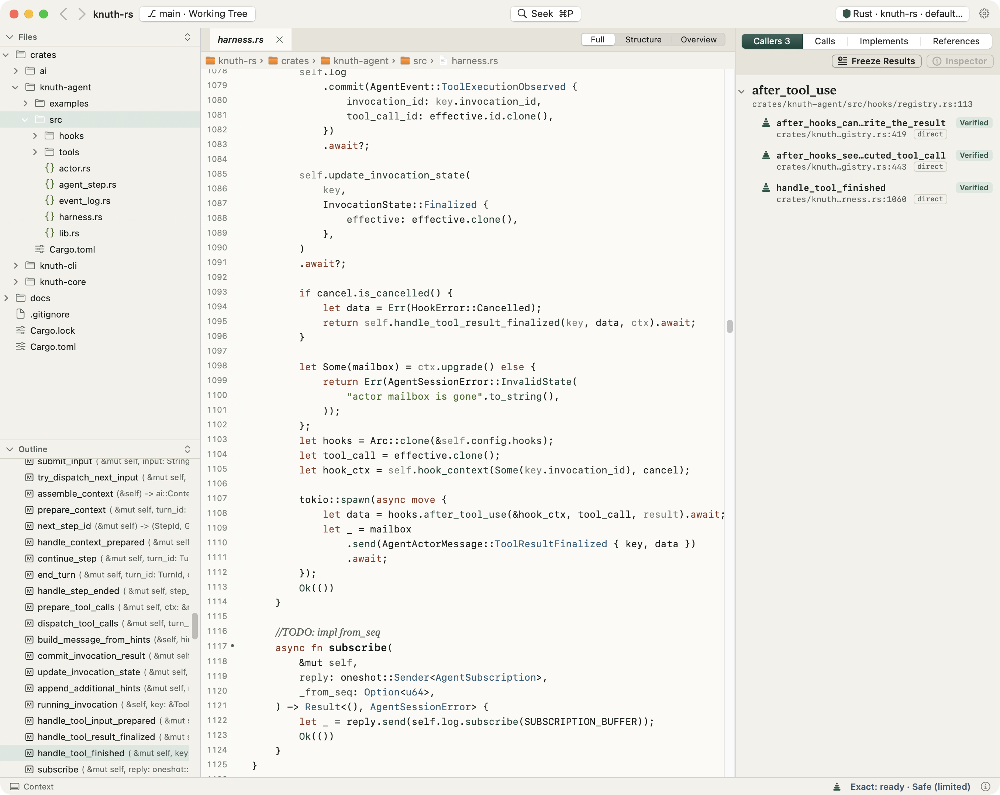

A native, read-only code reader for macOS
Unfamiliar code
is terrain.
Leave cairns.
Cairn marks the way through a codebase you didn’t write — symbols, callers, any commit in its history — shows the evidence for every step, and remembers the path so you can walk it again. It never edits a line.


harness.rs in knuth-rs: every caller of after_tool_use, verified.Native AppKit · Swift 6